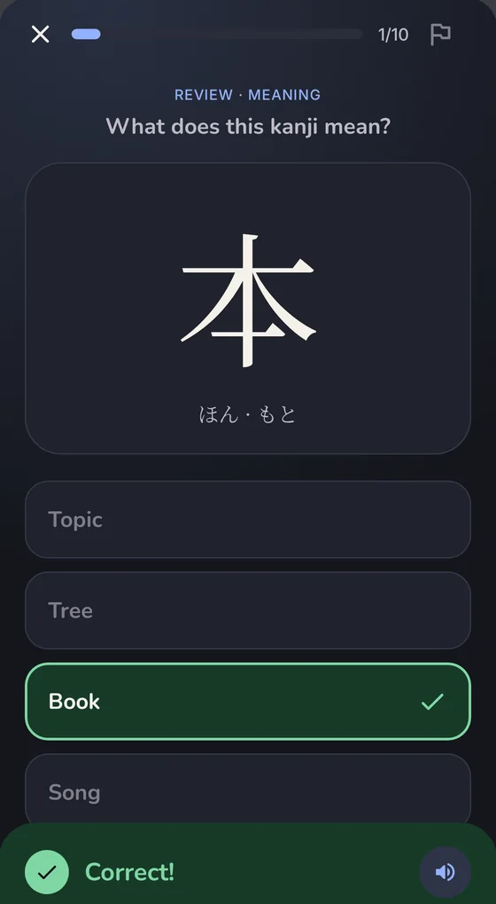
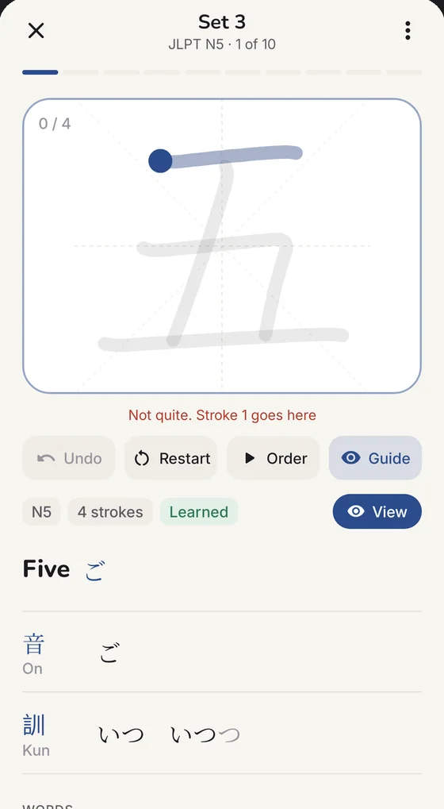

Sumi
JLPT kanji, N5 to N3, one set a day.JLPTの漢字をN5からN3まで、1日1セットずつ。
612 kanji in 62 small sets, with stroke order, quizzes and a writing pad that checks every stroke. And Sumi-chan, a pen pal who writes to you using only the kanji you've already learned.
612字を62の小さなセットに。書き順、クイズ、一画ずつ判定する書き取りパッドで覚えます。そして、覚えた漢字だけを使って手紙をくれる文通相手、すみちゃんがいます。
- Free無料
- No ads, no account広告・アカウントなし
- Android 10+
一日How a day works1日の流れ
Ten kanji a day, learned properly.1日10字を、しっかり覚える。
Each set is a short lesson. You meet the kanji, watch how they're written, get quizzed, and write them yourself.
1セットは短いレッスンです。漢字に出会い、書き順を見て、クイズに答え、自分で書いてみます。
Learn a setセットを学ぶ
Readings come in the order real words use them, with example words you'll actually meet.
読み方は実際の単語でよく使われる順。よく出会う例語も一緒に。
Watch the strokes書き順を見る
Every kanji is drawn for you stroke by stroke, in the right order and direction.
すべての漢字を、正しい順番と向きで一画ずつ描いて見せます。

Take the quizクイズに答える
It waits for you: see the answer, hear it, then continue. Misses come back at the end.
急かしません。答えを見て、聞いてから次へ。間違えた問題は最後にもう一度。

Write it yourself自分で書く
The pad checks each stroke's shape, direction and order, and shows you where it goes.
一画ごとに形・向き・順番を判定し、どこに書くかを教えてくれます。
便りLetters from Sumi-chanすみちゃんからの手紙
A pen pal who writes at your level.あなたのレベルで書いてくれる文通相手。
Sumi-chan writes short letters in natural Japanese. A word appears in kanji only once you've learned every kanji in it, so what you can read grows with you.
すみちゃんは自然な日本語で短い手紙を書きます。単語は、その漢字をすべて覚えてから漢字で表示されるので、読める文章があなたと一緒に増えていきます。
-
Only the kanji you know覚えた漢字だけで
Everything else gets furigana or is written in kana, whichever you prefer. Try it with the slider: finish more sets and watch the letter change.
ほかの漢字にはふりがなが付くか、かなで書かれます（どちらか選べます）。スライダーでセットを進めると、手紙が変わっていくのが分かります。
-
Tap any word単語をタップ
See its reading, meaning and kanji, save it to your words, and review it later on a spaced schedule.
読み方・意味・漢字を確認して単語帳に保存。間隔を空けて復習できます。
-
Write back返事を書く
Reply in Japanese or English and keep chatting. If your Japanese has a mistake, she adds a gentle tip.
日本語でも英語でも返事ができ、そのままチャットで続けられます。日本語にミスがあれば、やさしくアドバイスしてくれます。
-
She remembers youあなたのことを覚えている
What you tell her comes up again later, and her own life carries on from letter to letter. You can see or erase what she remembers at any time.
話したことを後で覚えていて、彼女自身の毎日も手紙ごとに続いていきます。覚えている内容はいつでも確認・削除できます。
-
Hear her voice声で聞く
She reads her letters aloud in a natural voice, and says exactly what you see on the page.
自然な声で手紙を読み上げます。読み方は画面に表示されているものと必ず同じです。
-
Make her yours好みに合わせて
Choose her personality, how formal she is, how long her letters are and what she talks about.
性格、話し方の丁寧さ、手紙の長さ、話題を選べます。
Gentle 穏やかCheerful 元気Playful お茶目Cool クールBig sister お姉さん
What she remembers覚えていることexample例
- About youあなたTaking the N3 in December12月にN3を受ける
- Ask laterあとでHow the mock test went模試の結果
- Her life彼女Started a pottery class陶芸教室に通い始めた
正確Built for accuracy正確さへのこだわり
Nothing wrong reaches you unchecked.間違いを、そのまま見せない。
An app you learn from has to be right. Sumi checks its own work, and if something can't be checked, it isn't shown.
学ぶためのアプリは正確でなければいけません。Sumiは自分の出力を確認し、確認できないものは表示しません。
Every reading, checked読み方はすべて確認
AI can get readings wrong. Every word in every letter is checked on your phone against the full JMdict dictionary, about 190,000 words, before you see it.
AIは読み方を間違えることがあります。手紙のすべての単語を、表示する前にスマホ内のJMdict辞書（約19万語）で確認します。
Real stroke checking本物の書き取り判定
The writing pad compares each stroke with KanjiVG's stroke data: its shape, its direction and its place in the order.
書き取りパッドは、一画ごとの形・向き・書き順をKanjiVGの筆画データと照らし合わせます。
Quizzes you can't guess勘では解けないクイズ
Wrong options are look-alikes or close in meaning, so you have to know the kanji, not rule out the odd one.
選択肢は形の似た漢字や意味の近い言葉。消去法ではなく、本当に覚えていないと解けません。
- Streaks with freezes. Earn freezes that cover a missed day automatically.ストリークとフリーズ。フリーズがあれば、休んだ日も自動でカバー。
- Home-screen widgets. Today's kanji on your home screen and in a notification.ホーム画面ウィジェット。今日の漢字をホーム画面と通知に。
- A daily reminder at the time you choose.毎日のリマインダーを好きな時間に。
- My words. Flashcards for words you saved, at 1, 3, 7, 14 and 30 days.単語帳。保存した単語を1・3・7・14・30日後に復習。
- Kana charts and a searchable library of all 612 kanji.かな表と、612字すべてを検索できる漢字一覧。
- Backup and restore to Google Drive or any storage app, her voice included.バックアップと復元はGoogleドライブなどに。すみちゃんの声も一緒に。
道The road to N3N3への道のり
612 kanji. 62 sets. One at a time.612字、62セット。ひとつずつ。
私Private by designプライバシー
Your progress stays on your phone.学習の記録はスマホの中だけに。
Open it and start. There's no sign-up and no Sumi server: your progress, letters and words live on your phone.
開いてすぐ始められます。登録もSumiのサーバーもなく、記録・手紙・単語はすべてスマホの中です。
No ads, no analytics, no tracking, and nothing to buy.
広告も分析ツールもトラッキングもなく、課金もありません。
Sumi-chan's letters and voice use Google's Gemini with your own free key, sent straight from your phone to Google. Everything else works without it.
すみちゃんの手紙と声は、ご自身の無料のGeminiキーでスマホから直接Googleに送られます。それ以外の機能はキーなしで使えます。
The details are in the詳しくは privacy policyプライバシーポリシー.をご覧ください。
参加Join the betaベータに参加
Help Sumi reach Google Play.SumiをGoogle Playへ。
Before an app can go public, Google Play needs 12 testers to keep it for 14 days. It takes about two minutes to join, and it's free.
アプリを一般公開する前に、Google Playの規定で12人のテスターに14日間使ってもらう必要があります。参加は2分ほどで、無料です。
- 01
Join the testers' groupテスターのグループに参加
Use the Google account that's on your Android phone. Anyone can join.
Androidスマホで使っているGoogleアカウントで参加してください。どなたでも参加できます。
Join the groupグループに参加 ↗ - 02
Become a testerテスターになる
Open the test page on Google Play and tap “Become a tester”. If it isn't ready yet, give it a few minutes.
Google Playのテストページを開いて「テスターになる」をタップ。まだ表示されない場合は数分待ってください。
Become a testerテスターになる ↗ - 03
Install and keep itインストールして使い続ける
Install Sumi from that page and keep it for 14 days. Opening it now and then is all it takes. Thank you!
そのページからSumiをインストールして、14日間入れておいてください。ときどき開くだけで大丈夫です。ありがとうございます！
Open Google PlayGoogle Playを開く ↗
Stuck, or have a question? Write toうまくいかないときは (tap to copy).までご連絡ください（タップでコピー）。
問Questionsよくある質問
Good to know知っておくこと
Does it cost anything?お金はかかりますか？
No. Sumi is free, with no ads and nothing to buy. Sumi-chan uses your own Gemini key from Google AI Studio, which has a free tier.
いいえ。Sumiは無料で、広告も課金もありません。すみちゃんはGoogle AI Studioで作るご自身のGeminiキーを使い、無料枠があります。
Do I need a Gemini key?Geminiのキーは必要ですか？
Only for Sumi-chan's letters and her Gemini voice. Lessons, stroke order, quizzes, writing, widgets and everything else work without it. Getting one takes about 20 seconds, and the app walks you through it.
すみちゃんの手紙とGeminiの声にだけ必要です。レッスン、書き順、クイズ、書き取り、ウィジェットなどはキーなしで使えます。取得は20秒ほどで、アプリが手順を案内します。
Do I need to know Japanese already?日本語ができないと使えませんか？
No. It starts at N5, the first level, and the app is in English. Kana charts are built in if you're still learning hiragana and katakana.
いいえ。最初のレベルのN5から始まり、アプリは英語です。ひらがな・カタカナを学習中の人のために、かな表も入っています。
What does testing involve?テストでは何をすればいいですか？
Keep Sumi installed for 14 days and use it now and then. Feedback is welcome but optional; you can send it privately from Sumi's page on Google Play, or by email.
14日間Sumiを入れたままにして、ときどき使ってください。感想は大歓迎ですが任意です。Google PlayのSumiのページから非公開で送るか、メールでどうぞ。
Can I leave the test?途中でやめられますか？
Any time, from the same Google Play test page. It helps most if you stay the full 14 days, since Google only counts testers who stay.
同じGoogle Playのテストページからいつでもやめられます。ただ、Googleは参加し続けたテスターだけを数えるので、14日間続けてもらえると一番助かります。
I have an iPhone.iPhoneしか持っていません。
Sorry, Sumi is Android only for now.
ごめんなさい、今のところSumiはAndroid専用です。
Is it affiliated with the JLPT?JLPTの公式アプリですか？
No. Sumi is an independent app, not affiliated with the Japan Foundation, JEES or the JLPT.
いいえ。Sumiは個人が開発したアプリで、国際交流基金、日本国際教育支援協会、JLPTとは関係ありません。